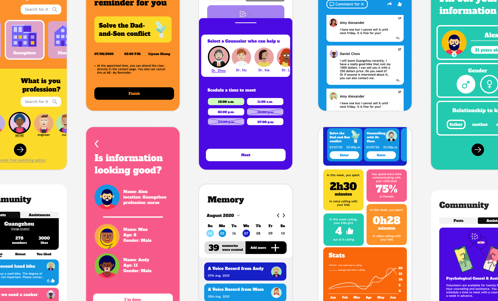

BRIDGE
An app that help left-behind family communicate better
Year:2020
Keywords: UX Research, UX Design, UI Design
The 2019 report on the psychological development of Chinese left-behind children clearly describes the developmental dilemmas faced by Chinese left-behind children who are not accompanied by their parents. Bridge is an APP designed for left-behind family. It builds support communities for the parents of left-behind children, and provides them with free psychological counseling and open parenting classes. It also relieves left-behind children mental issues by improving the communication between them and their parents.
